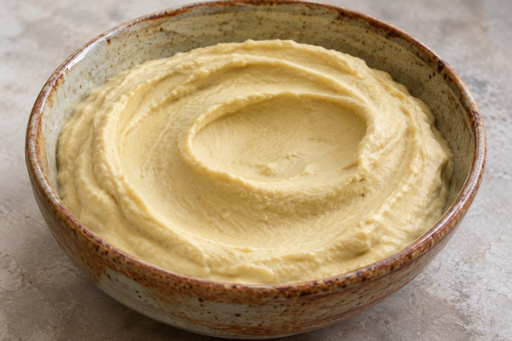

Hummus mit Tahini

Cremiger Hummus aus getrockneten Kichererbsen, Tahini, Zitrone und Knoblauch.
Zutaten
Zutaten
- 250 g getrocknete Kichererbsen
- Wasser zum Einweichen: die doppelte Menge laut Vorlage
- 1 TL Natron
- 1,5 Liter Wasser zum Kochen (im Zubereitungstext genannt)
- 270 g Tahini
- 60 ml Zitronensaft (von ca. 1 großen oder 2 kleinen Zitronen)
- 4 Knoblauchzehen, zerdrückt
- 100 ml eiskaltes Wasser
- 1½ TL Salz (Menge aus dem Zubereitungstext)
Zubereitung
- Die Kichererbsen über Nacht in der doppelten Menge Wasser einweichen.
- Kichererbsen abgießen und mit dem Natron in einen mittelgroßen Topf geben. Bei hoher Hitze unter ständigem Rühren etwa 3 Minuten anrösten.
- 1,5 Liter Wasser hinzufügen und aufkochen. Die Kichererbsen etwa 30 Minuten kochen; je nach Alter kann die Kochzeit 20–40 Minuten betragen. Sich lösende Häutchen regelmäßig entfernen. Die Kichererbsen sind fertig, wenn sie sich leicht zwischen Daumen und Zeigefinger zerdrücken lassen.
- Kichererbsen abgießen und im Mixer zu einer festen Paste pürieren. Bei laufendem Mixer Tahini, Zitronensaft, Knoblauch und 1½ TL Salz hinzufügen.
- Das eiskalte Wasser langsam dazugießen und weitere 5 Minuten mixen, bis der Hummus vollständig glatt und cremig ist. In eine Schüssel geben und bis zum Servieren beiseitestellen.
- Möglichst frisch und warm servieren. Wird der Hummus im Voraus zubereitet, laut Vorlage in einem dicht verschlossenen Behälter im Kühlschrank aufbewahren, etwa 30 Minuten vor dem Servieren herausnehmen und eine eventuell gebildete Haut kurz unterrühren.
Weitere Bestandteile
Quelle und Hinweise
Bereitgestellte englischsprachige Rezeptblätter „Hummus in Two Ways!“, die auf „Palästina – Das Kochbuch“ von Sami Tamimi und Tara Wigley verweisen.
Ins Deutsche übersetzt und auf Wunsch in drei eigenständige Rezepte aufgeteilt. Die Vorlage nennt 6 Personen für Hummus mit einem der Toppings; die Originalmengen wurden unverändert übernommen. Eigenständige Portionszahlen der Bestandteile sind nicht angegeben. Einweich-, Warte- und Garzeiten stehen in den Schritten; keine Gesamtzeit wurde errechnet.
Kochwasser und Salzmenge stammen aus der Zubereitung. Persönliche Anmerkungen des Arbeitsblatts wurden weggelassen.